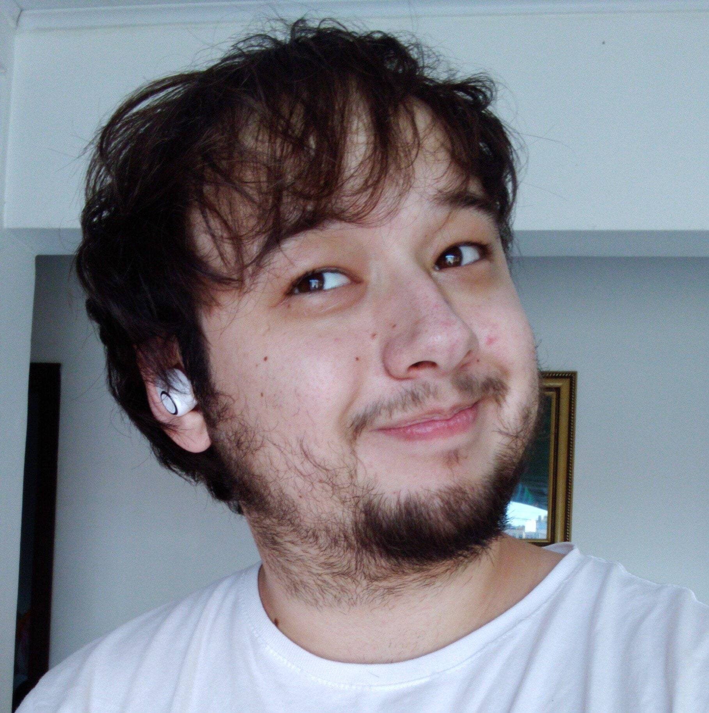
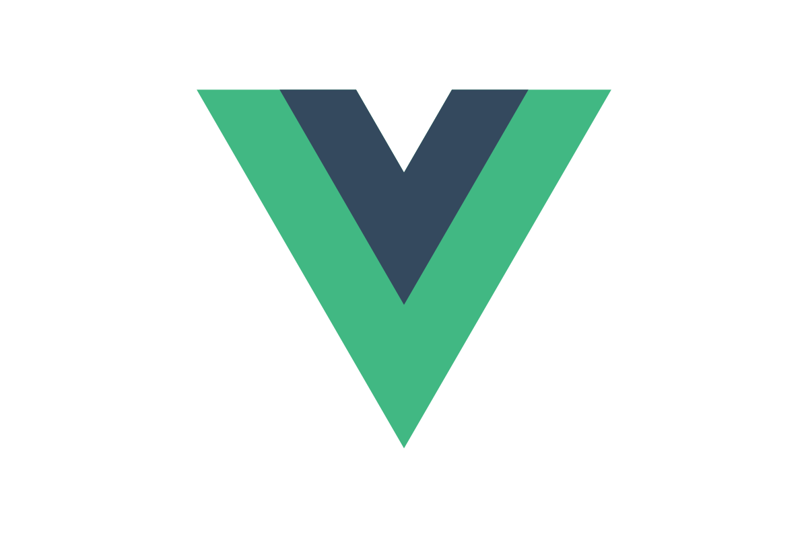
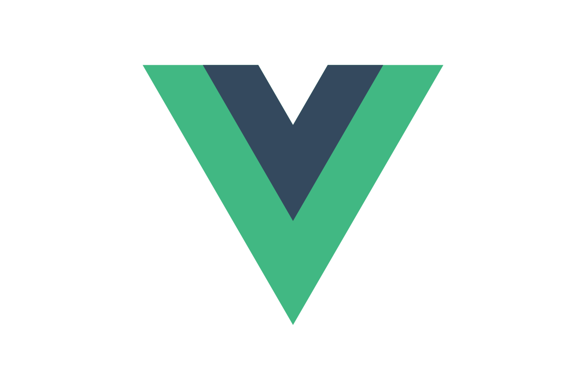
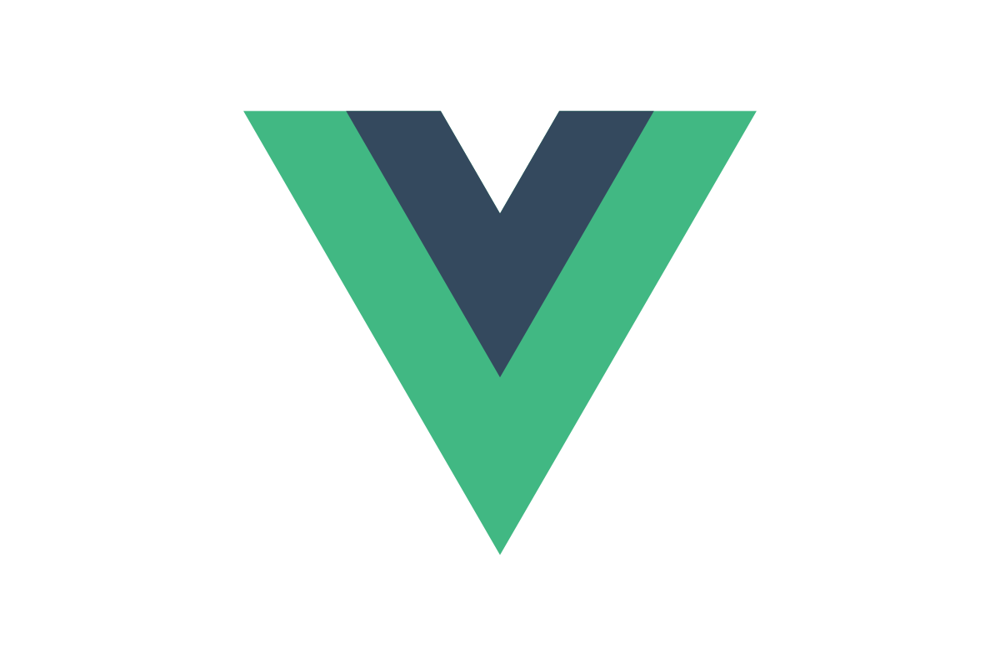
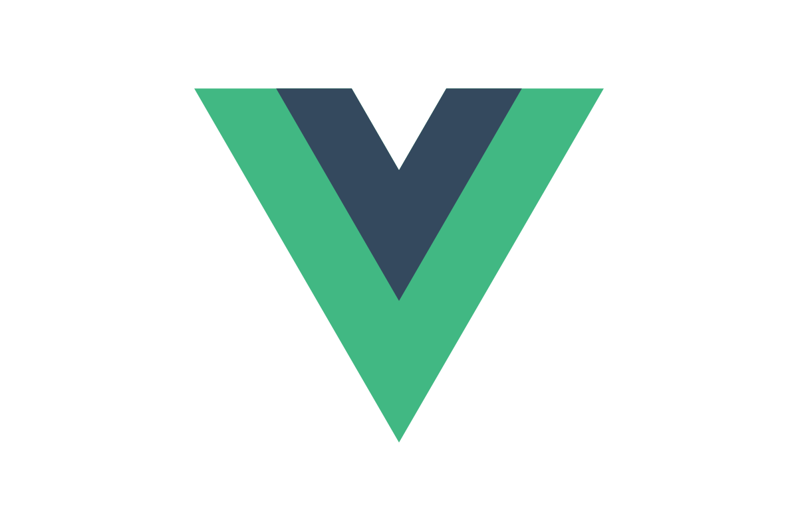

Eduardo Moro
desenvolvedor full-stack.


 



 

Após a produção de um projeto utilizando arduino e linguagem C no colégio, vi o desafio que era programar, e o quanto aquilo havia me animado, não consegui parar de estudar até entender o que estava acontecendo, e como faria para meu projeto funcionar. Esta experiência foi o estopim para tudo que viria, decidi me inscrever no curso de Análise e desenvolvimento de sistemas, na Universidade Federal do Paraná, e sou programador desde 2019.
Não há nada que me prenda mais à uma história, seja de livros, ou de jogos, do que a "jornada do herói", a idéia de que você acompanha um personagem o qual não é simplesmente excepcional só por ser, ele é excepcional por ter uma essência, durante a sua história, vemos o crescimento do personagem, e todos os desafios que ele encontra e apesar deles, vemos seu triunfo.
O que sinto quando domino um novo conceito, é que estou crescendo, me tornando cada vez melhor, e é isto que me motiva a ser um programador, resolvendo um desafio atrás do outro.